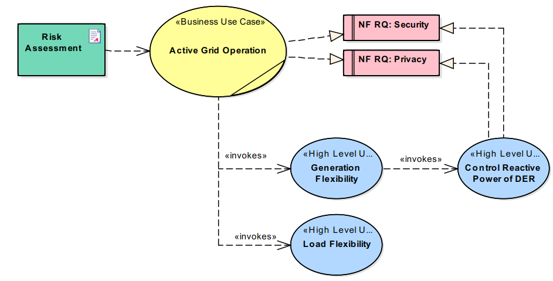
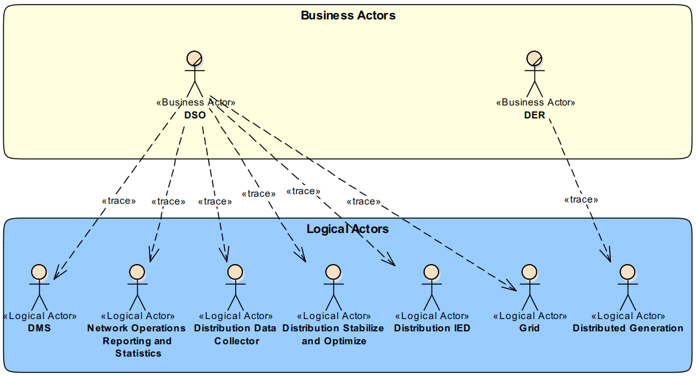
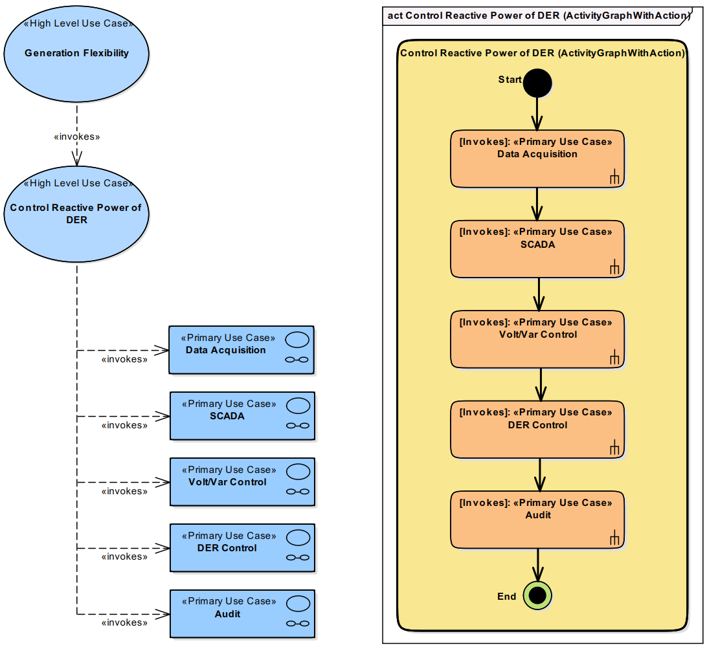
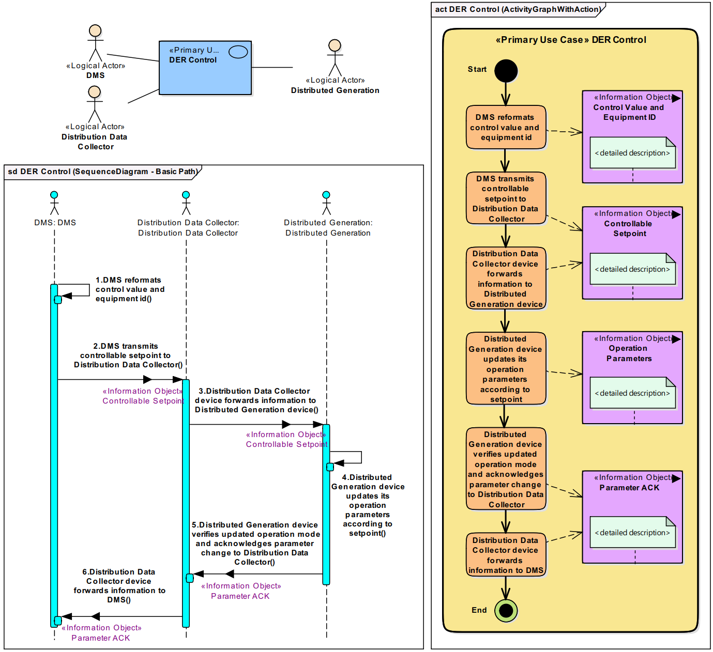
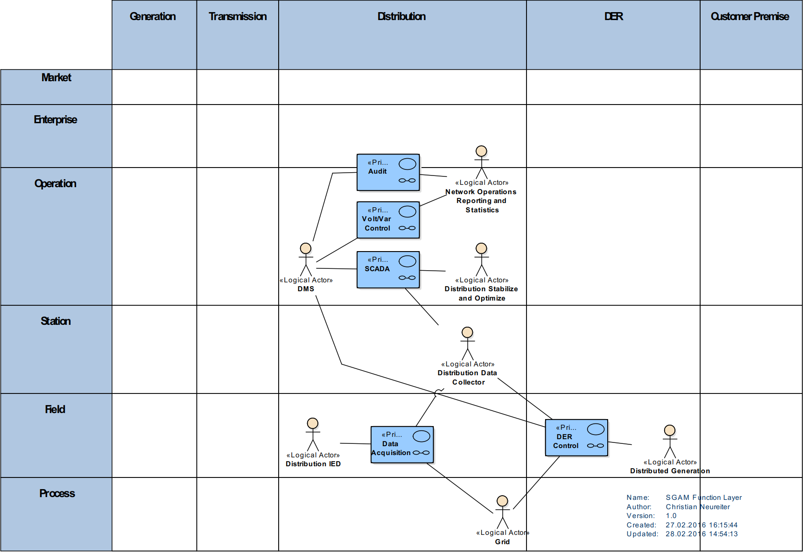

System Analysis - Function Layer
The initial step in defining functionality is to derive particular High Level Use Cases (HLUC) on basis of the preliminary described Business Case. For a detailed description of the individual HLUCs the IEC 62559 Use Case template is used which is reflected by the DSL. In the given example three HLUC (Generation Flexibility, Control Reactive Power of DER and Load Flexibility) are specified. The relations between a business case and HLUCs are of type "invoke". Moreover, relations between particular HLUCs can be described by standard UML Use Cases relations. In the example, this is demonstrated as the HLUC "Generation Flexibility" invokes another HLUC "Control Reactive Power of DER". Figure 1 depicts the derivation of HLUCs on basis of the given Business Case. In addition, this illustration depicts the association of previously defined requirements with the derived HLUCs. However, typically the derivation of HLUCs goes hand in hand with further refinement of these requirements.

Figure 1. Derivation of High Level Use Cases.
The elaboration of the detailed functionality of one HLUC is typically done iteratively. In the beginning, an initial model transformation is conducted that derives particular Logical Actors (LA) out of the Business Actors. Figure 2 exemplarily depicts the model transformation for the two business actors DSO and DER. The initial transformation typically is not complete as during the detailed analysis additional actors arise. However, to provide consistency throughout the whole model it is important to maintain the model transformation and assign every newly introduced LA to a certain BA.

Figure 2. Model Transformation: Business Actors into Logical Actors.
The detailed analysis of one particular High Level Use Cases starts with a decomposition into more granular Primary Use Cases (PUC). In the example given, the HLUC "Control reactive power of DER" is decomposed into the five PUCs Data Acquisition, SCADA, Volt/Var Control, DER Control and Audit (Figure 3).

Figure 3. Decomposition of a single HLUC.
Moreover, the interrelations between the particular PUCs are depicted as UML Activity diagram. In that case, the investigated HLUC is described as Activity and all of the invoked PUCs are integrated as corresponding Actions. The described concept is very well established within the UML and thus, many tools typically support some auto-generation of the activity diagrams out of the box. The availability of such features like diagram generation is not only a "nice to have" issue as they raise efficiency for modeling dramatically which is a key factor for acceptance.
Subsequent to the identification of the individual PUCs, they can be scrutinized and described in detail. The main interest lies in a complete description of a single PUC which again can be done by all available concepts of UML. However, in terms of privacy and security the information exchanged between individual actors is a major asset. Thus, another goal of this step is to identify and describe all involved Information Objects (IO). Besides the focus of privacy and security the introduction of explicitly described IOs is a valuable concept for providing consistency within the developed architecture.
Figure 4 exemplarily depicts the detailed description for the PUC "DER Control" with all mentioned aspects. The according development is described in the following in detail.

Figure 4. Decomposition of a single HLUC.
Typically, description of Use Cases starts with a textual description. The SGAM Toolbox as extension for the
Enterprise Architect www.sparxsystems.com modeling tool supports diagram generation out of a textual description. Thus, in a first step the textual description can be added to the PUC as
Structured Scenario. If
Logical Actors (LA) are already assigned to the PUC they will automatically be recognized. Missing actors can be introduced to the model and need to be assigned to an appropriate Business Actor as described above. After introducing all missing actors, the UML Sequence and Activity Diagram can be auto-generated.
Provided with the Activity Diagram, the individual steps can be analyzed and certain Information Objects (IO) can be defined. The example given comprises four IOs (on the very right side). At this stage, the IOs can be described in arbitrary detail. It is important to notice that these model elements will be used not only for privacy and security considerations but also for further development. Thus, an early clarification of the information to be exchanged helps to maintain consistency and is useful in multiple ways.
In a final step of the PUC description, the preliminary specified IOs can be added to the concerning steps within the sequence diagram. Doing this for every single PUC draws a complete picture of all PUCs and LAs involved within this HLUC. This complete picture can be visualized in context of the SGAM Function Layer as depicted in Figure 5. Again, as a modeling language is used for development, this image does not have to be drawn manually. Instead, it is a result of the detailed descriptions of all individual PUC considerations.

Figure 5. SGAM Function Layer.